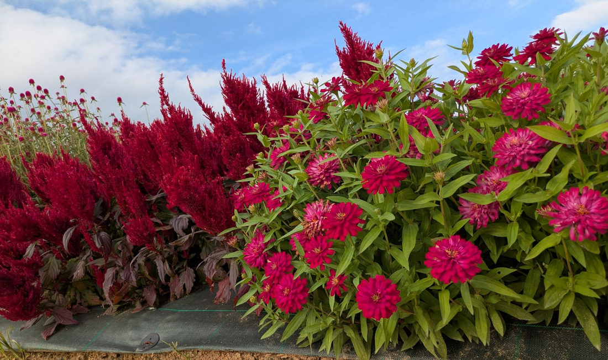
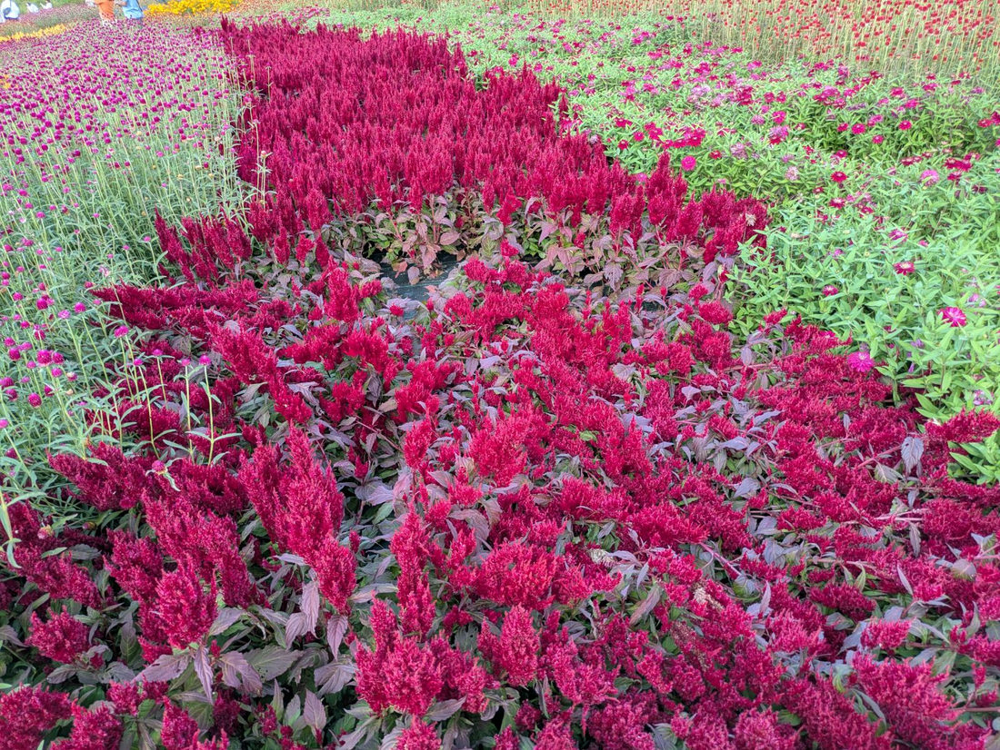
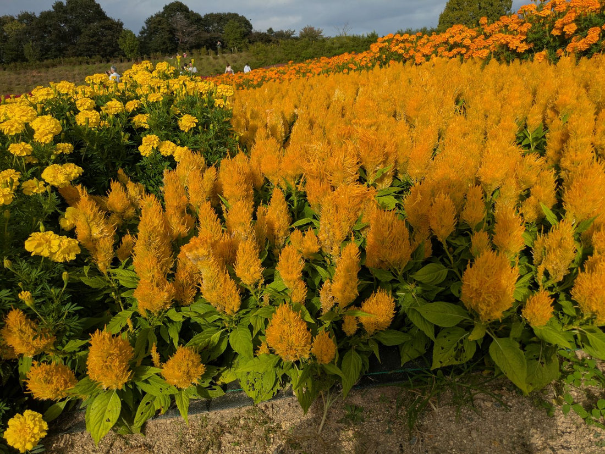

地図を読み込んでいるよ…
🔍 写真も地図も、押しているあいだ拡大して見られるよ（スマホは指を置いてすこし待ってね）。
🌍 の地図＝この子がもともと自生している場所を緑に。熱帯アジアから熱帯アフリカにかけての原産と推定される（出典によって食い違う）。日本へは奈良時代に中国を経由して渡来した。
⚠⚠この子は、ふるさとがはっきりしていないんだ。三河の植物観察は「熱帯、亜熱帯原産」、日本語版Wikipediaは「アジア、アフリカの熱帯地方と推定」、英語版Wikipediaは「熱帯アフリカ」とする。⭐⭐そして三河のノゲイトウ（同じ学名の野生のすがた）の項は、はっきり「原産地ははっきりせず、アジアのインド原産ではないかとされている」と書いている。——⭐つまり、どの出典も「推定」としか言っていない。⭐だからこの地図は、出典が名前を挙げた「熱帯アジア」と「熱帯アフリカ」の両方を塗ってある——⚠これは「このへんのどこか」というぐらいの意味で見てね。⭐⭐⭐そして、この地図でいちばん大事なのは「日本が緑じゃないこと」——日本へは奈良時代に中国を経由して渡来した（Wikipedia）。⭐⭐万葉集に「韓藍（からあい）」として4首も詠まれているのは、⭐そのころにはもう、この国の庭で咲いていたからなんだね。
⚠ 地図は国（日本と中国だけ県・省）までしか塗れないから、ほんとうの分布より広く見えていることがあるよ。地図はだいたいの場所。正確なところは、上の文を見てね。
ケイトウ（鶏頭）
Celosia argentea L.（羽毛ケイトウ＝Plumosa Group）
古名「韓藍（からあい）」／フサゲイトウ／英名 plumed cockscomb・silver cock's comb
ヒユ科 · Amaranthaceae（ケイトウ属 Celosia・ナデシコ目 Caryophyllales）── 113ハゲイトウ・167センニチコウに続く3人目のヒユ科。ケイトウ属ははじめて
燻太さんの一言「手前には、ジニアの赤色の株も移っている画像があるね」──その子、うちの図鑑の168本人だったよ
名前のこと ── ぜんぶ「燃えている」
- ⭐⭐⭐属名 Celosia は、ギリシャ語の「燃焼」から。「学名の Celosia は燃焼という意味のギリシャ語 kēleos(ケレオス)に由来する」（Wikipedia）。⭐あの色が、そのまま名前になっている。
- ⭐⭐和名の「鶏頭」は、にわとりのとさか。「その形状がニワトリの鶏冠（とさか）に似ていることからこの名がついた」（Wikipedia）。⚠でも、この写真の子は「とさか」の形じゃない——⭐羽毛のようにふさふさ立ち上がる「羽毛ケイトウ」だよ（下の節でくわしく）。
- ⭐⭐⭐古い名前は「韓藍（からあい）」。⭐万葉集に4首もある（📖の節を見てね）。
- 日本へは、奈良時代に中国を経由して渡来した（Wikipedia）。⭐渡来が奈良時代以前の196 ナツメとならぶ古株だね。
この植物のこと ── 「羽毛ケイトウ」のこと
- ヒユ科ケイトウ属の一年草。高さ30〜90cm（三河）。⭐⭐この図鑑で3人目のヒユ科（113 ハゲイトウ／167 センニチコウ）。⭐ケイトウ属ははじめて。
- 葉は互生し、卵状披針形（三河）。⭐写真②の株は、葉まで赤紫に染まっている——⭐花だけじゃなく、株ごと燃えている感じ。
- 小さな花がびっしり集まって穂になる。花被片は5個、長さ約5mm、赤色で、果時にも残る（三河）。⭐だから、花が終わっても色が消えない。
- ⚠⚠この写真は「羽毛系」。Wikipediaは「羽毛ケイトウ、久留米ケイトウ、トサカケイトウなどの系統がある」とする。⭐羽毛系（Plumosa Group）は、穂が円錐形に立ち上がって、ふさふさの羽根みたいになる。⚠三河の「ケイトウ」のページはトサカ系（var. cristata）の記載で、「花序が大きくなるとトサカ状になる」とある——⭐同じ種なのに、花序の形がまるでちがう。
- 花期は8〜10月（三河）／5月から10月頃（Wikipedia）。⭐果実は胞果で、種子は長さ1.3〜1.4mm、光沢のある黒色、レンズ状（三河）。
- ⭐⭐花と葉は、アフリカと東南アジアで食用（Wikipedia）。英語版Wikipediaも「The leaves and flowers are edible and are grown for such use particularly in west Africa and Southeast Asia」とする。⭐ヒユ科は113 ハゲイトウもそうだったけれど、食べる子が多い科なんだ。
同定について
⭐ 迷うところはほとんどなかったよ。
- ⭐⭐⭐①小さな花がびっしり集まった穂が、円錐形に立ち上がって羽毛みたいにふさふさ＝羽毛ケイトウ（Plumosa Group）の形。
- ⭐⭐②葉は互生、卵状披針形（三河）。
- ⭐⭐③茎も葉も、花と同じ赤紫を帯びている（写真①②の株）。
- ⭐④花期8〜10月（三河）と合う。
- ⭐⑤花壇に列で植えられている＝観賞用の栽培品。
❌ 落とした相手＝トサカケイトウ（var. cristata）。⭐あちらは花序が帯のようにつぶれて、とさか状になる（三河「花序が大きくなるとトサカ状になる」）。⚠この写真にその形は一つも無い。
⚠ 品種名までは決めないでおくね（184 マンデビラ・186 クレマチスと同じ）。⭐羽毛系だけでも園芸品種がたくさんあるから。
⭐⭐⭐ 回収 ── 113ハゲイトウが呼んでいた「花で見せる本家」が来た
⭐⭐⭐ この子は、「この季節に探してみたい」でずっと待っていた子なんだ。
113 ハゲイトウのおまけとして、ぼくはこう書いていた ──
「⭐113ハゲイトウのおまけ＝同じヒユ科なのに「花」で見せる本家（Celosia）。ハゲイトウが葉で真っ赤に見せるのに対し、こちらは鶏のとさかのような花そのものが燃えるように色づく。ハゲイトウ＝「葉で見せる鶏頭」だから「葉」鶏頭。」
⭐⭐⭐ その「本家」が、来たよ。
- ⭐⭐ハゲイトウ（葉鶏頭）は、「葉」の鶏頭。⭐名前の中に「ケイトウ」が入っているのに、赤いのは葉のほう。
- ⭐⭐ケイトウ（鶏頭）は、花のほう。⭐写真②を見ると、この子は両方やっている——⭐花も葉も赤紫。⚠でも名前になったのは、花のほうだけ。
- ⭐⭐⭐同じ科の親戚が、「どこを赤くするか」で名前を分けあっている。
⭐⭐⭐ この3枚は、図鑑の同窓会だった
⭐ 写真を拡大していたら、おかしなことに気がついた。——⭐⭐主役のまわりに、うちの図鑑の子が何人も写っている。
- 写真②の左の、丸い頭がぽんぽん並んでいるの ── ⭐167 センニチコウだ。⭐⭐しかもこの子、ケイトウと同じヒユ科。——⭐同じ科の二人が、となり合わせの畝に植えられている。
- 写真①と②の、幅の広い葉に八重の花 ── ⭐⭐168 ヒャクニチソウ本人。⭐燻太さんが「ジニアの赤色の株」と言ったのが、これ。⚠「探してみたい」にいるホソバヒャクニチソウは細い線形の葉だから、そっちじゃないよ——⭐葉が広い長卵形だから、168のほう。
- 写真③の黄色い花 ── ⭐マリーゴールドのなかま（165）。⚠165はフレンチマリーゴールドだけれど、この写真の子がフレンチかアフリカンかは、この距離では決められなかった。
⭐⭐⭐ お花畑にいるのは、たぶん「よく植えられる子」ばかり。——⭐だから図鑑がたまってくると、こういうことが起きる。⭐⭐一枚の写真の中で、知っている子が増えていく。
📖 万葉集の「韓藍」── 枯らして、それでもまた蒔く
⭐⭐⭐ ケイトウは、万葉集に4首も出てくる。古名の「韓藍（からあい）」で。
⭐ なかでも、この一首がいいんだ。
「我がやどに 韓藍（からあい）蒔き生ほし 枯れぬれど 懲りずてまたも 蒔かむとぞ思ふ」
── 山部赤人（万葉集・巻三・384番）
⭐⭐ 「庭に韓藍を蒔いて育てた。枯れてしまったけれど、こりずに、またも蒔こうと思う。」
⭐⭐⭐ 千三百年前の人が、花を枯らして、それでもまた蒔こうとしている。——⭐この歌のいいところは、うまくいってないところだと思う。
ほかの3首も、みんな「わが園」「わが蒔きし」で始まる庭の歌だよ ──
- 秋さらば移しもせむと我が蒔きし韓藍の花を誰れか摘みけむ（1362番）
- 恋ふる日の日長くしあれば我が園の韓藍の花の色に出でにけり（2278番）
- 隠りには恋ひて死ぬともみ園生の韓藍の花の色に出でめやも（2784番）
⭐⭐ 後の二首は「色に出づ」＝気持ちが顔に出てしまうことの喩え。⭐あの燃える色は、千三百年前から「かくせない気持ち」の色だったんだ。
⚠ ひとつ断っておくね。「韓藍(からあい)はヒユ科の一年草の鶏頭(けいとう)とされています」〔たのしい万葉集〕——⭐「とされている」＝これは比定で、当時の人がまさにこの植物を指していたと証明されたわけじゃない。
⭐ これで、この図鑑の万葉集は7人目（093 センダン／145 クズ／169 ハマユウ／185 タカノハススキ／189 モミジ／197 カタクリ）。
⭐⭐ 銀色の話 ── なぜ「燃える花」が argentea なのか
⚠ ここ、ずっと引っかかっていたんだ。
属名の Celosia は「燃焼」。⭐なのに種小名の argentea は、ラテン語で「銀色の」（argenteus／女性形 argentea）。⚠⚠燃える花に、なんで銀の名前？
⭐⭐ 手がかりは、おまけの「ノゲイトウ」にあった。
ノゲイトウ（野鶏頭）は、この子とまったく同じ学名の Celosia argentea L.——⭐園芸品じゃない、野生のすがただよ。本州西部以西に帰化していて、三河はこう書いている ──
「花序は先が濃ピンク色、咲き終わった花序の下部は銀色になる。」
⭐⭐⭐ 咲き終わったところが、銀色になる。⭐ そして英名のひとつは silver cock's comb（銀のとさか）〔英語版Wikipedia〕。
⚠ ここから先は、ぼくの読みだよ。——⭐学名をつけた人が見たのは、たぶん「燃えている盛り」じゃなくて、「咲き終わって銀色になったところ」だったんじゃないかな。⚠そう書いた出典には当たれなかったから、これは想像として書いておくね。
⭐⭐ もしそうなら、この植物は名前の中に、始まりと終わりの両方を持っていることになる。——⭐燃える（Celosia）と、灰になる（argentea）。
⏳ だから、おまけはノゲイトウにしたよ。⭐野原で、銀色になったところを見つけたい。
参考：三河の植物観察・ケイトウ（ヒユ科ケイトウ属／熱帯、亜熱帯原産／古い時代に中国から渡来したと推定／高さ30〜90cm／葉は互生し卵状披針形／花序が大きくなるとトサカ状になる／花被片は5個・長さ約5mm・赤色・果時にも残る／花期8〜10月／果実は胞果・種子は長さ1.3〜1.4mm・光沢のある黒色・レンズ状）／三河の植物観察・ノゲイトウ（Celosia argentea L.／帰化種・アジア原産／原産地ははっきりせず、アジアのインド原産ではないかとされている／日本でも本州西部以西に帰化／花序は先が濃ピンク色、咲き終わった花序の下部は銀色になる／花期7〜10月）／ケイトウ - Wikipedia（ニワトリの鶏冠に似ていることからこの名／Celosia は燃焼という意味のギリシャ語 kēleos に由来／原産地はアジア、アフリカの熱帯地方と推定／奈良時代に中国を経由して渡来／羽毛ケイトウ、久留米ケイトウ、トサカケイトウなどの系統／花と葉はアフリカと東南アジアで食用／花期は5月から10月頃）／Celosia argentea - Wikipedia(英語版)（plumed cockscomb or silver cock's comb／Plumosa Group・Spicata Group・Cristata Group／The leaves and flowers are edible…particularly in west Africa and Southeast Asia）／たのしい万葉集・韓藍(からあい)を詠んだ歌（韓藍はヒユ科の一年草の鶏頭とされています／0384・1362・2278・2784の4首）